Aug 2024 – Jun 2026Software · GNC · Ground station · Flown
CanSat 2026
Paraglider GNC & a portable ground station
Two seasons as a software developer for Team Skybound (Team ID 1049) in the international CanSat competition, which is run by the American Astronautical Society with NASA involvement. In June 2026 in Virginia we placed 14th out of 100+ teams worldwide.
Flight side
- The mission: the payload rides in a container under a parachute (about 15 m/s), separates at 80 % of peak altitude, deploys a paraglider and steers toward a GPS target at about 5 m/s, then drops a hen's egg in a honeycomb container 2 m above the ground, sending telemetry at 1 Hz the whole way.
- Wrote a guidance, navigation & control system in Python on a Raspberry Pi to steer the payload under a paraglider during descent.
- Designed the descent-control hardware: servo-actuated brake lines that the GNC loop drives to turn the wing.
- Set up the XBee XR900 long-range radio link that carries telemetry down to the ground.
- Generated realistic synthetic telemetry across every sensor column, so the ground software could be tested before flight.
Ground station
- Built a portable ground station in a hard case: a screen in the lid, a Raspberry Pi 4B running from a 21700 battery pack, and a front panel with power, calibration and payload-release switches beside the XBee radio. The CanSat travels in the same case.
- An INA219 monitors the station's own power, so battery state is visible in the field.
- Wrote the Skybound Ground Station software: live altitude, pressure, temperature, voltage and current plots, a 3D IMU attitude view, a GPS mini-map, a command panel (simulation mode, egg and payload release) and log export.
The night before environmental testing
- Symptom
- The first assembled flight board came back from the manufacturer with power shorted to ground.
- Cause
- The GND and VCC pads of one JST connector had been fabricated shorted together: the design was fine, the board wasn't. With tests days away, Mustafa and I stayed up all night, cut the traces out of that connector to isolate the short and hand-wired power from underneath. The patched board passed environmental testing with a perfect score.
- Test
- The egg must release 2 m above ground, so we built our own vacuum chamber (aluminium frame and a vacuum bag) to simulate altitude: as air flows back in, the barometer sees the altitude drop and the release fires.
2025 season
- First year on the team: a payload that collected atmospheric data, deployed a descent system and streamed telemetry in real time.
Beyond code. I also wrote the environmental test documentation and competition presentations, and filled in the scoresheets for judging.
The 4-layer avionics PCB was designed by our team and electrical lead, Mustafa Dalal. Team: Mustafa Dalal, Mohammed Abubakr Khan, Ilya Shynkevich, Munjalsinh Zala, Muhammad Fidyan Nagaria and me; mentor Ajinkya Keskar.
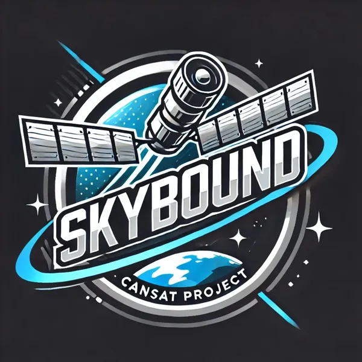
Team SkyboundCanSat · Team ID 1049 · SRH Berlin
- Role
- Software developer, 2025 & 2026
- Result
- 14th of 100+ teams, CanSat 2026 (Virginia, USA), final score 78.18 %; highest-placed team from Germany; egg recovered intact; perfect environmental-test score
- GNC
- Python on Raspberry Pi Zero 2 W
- Brakes
- 2 × MG90S servos on the steering lines
- Mission
- Separate at 80 % apogee, paraglider to GPS target, egg release at 2 m
- Radio
- Digi XBee XR900, telemetry at 1 Hz
- Ground
- Raspberry Pi 4B, 21700 pack, INA219
- Sensors
- BNO055, NEO-M9N GPS, BMP581, INA260
- Structure
- PA-CF frame, TPU 95A nose cone, honeycomb egg container
- Power
- 2 × INR18650 Li-ion, 12.95 Wh
- Mass
- 1000 g ± 10 g
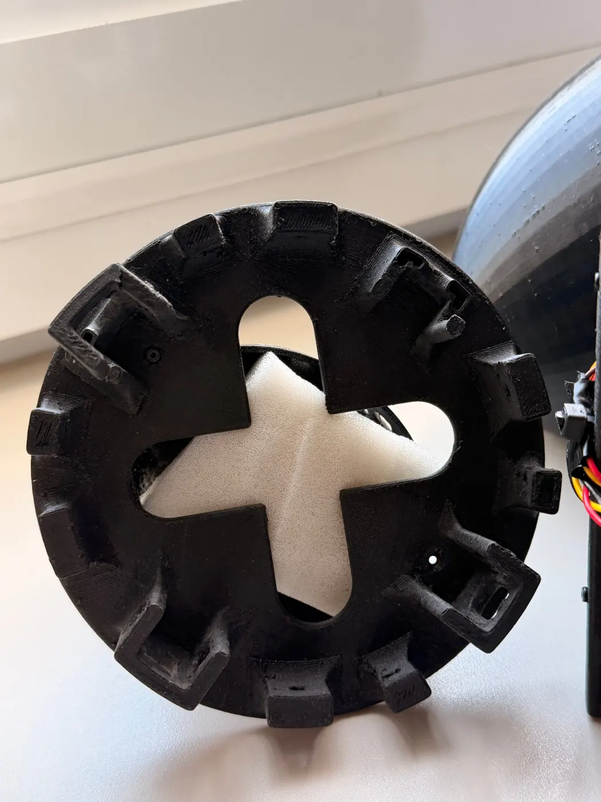
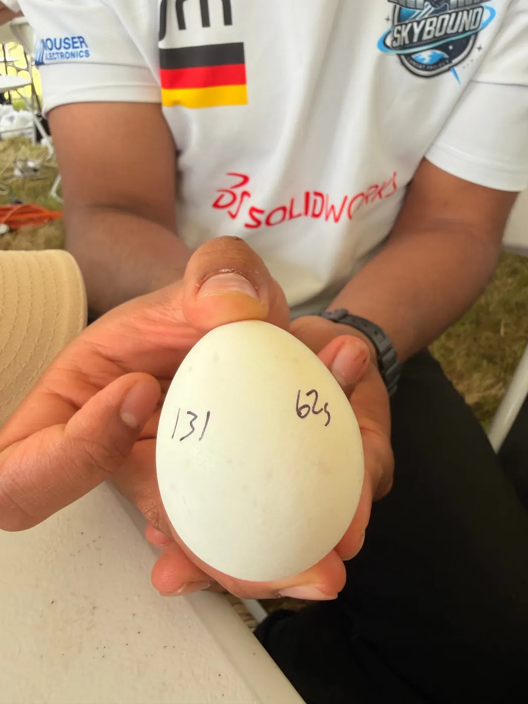
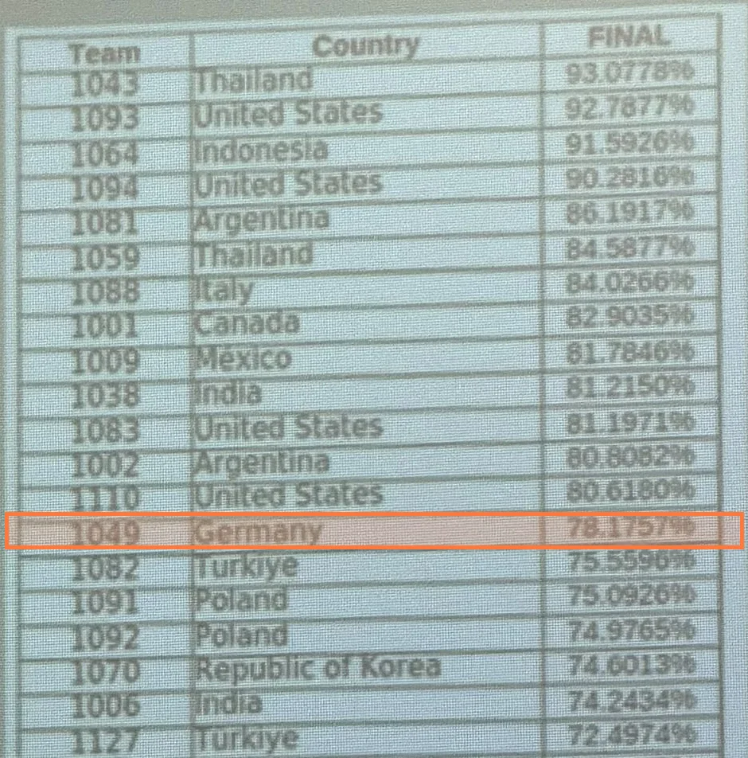
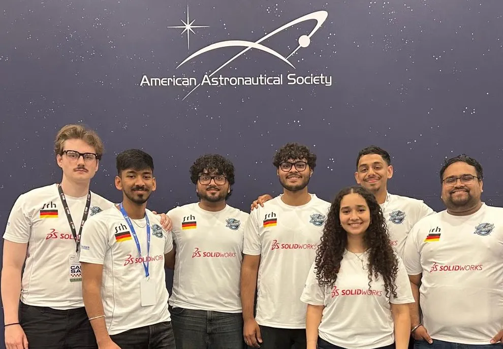
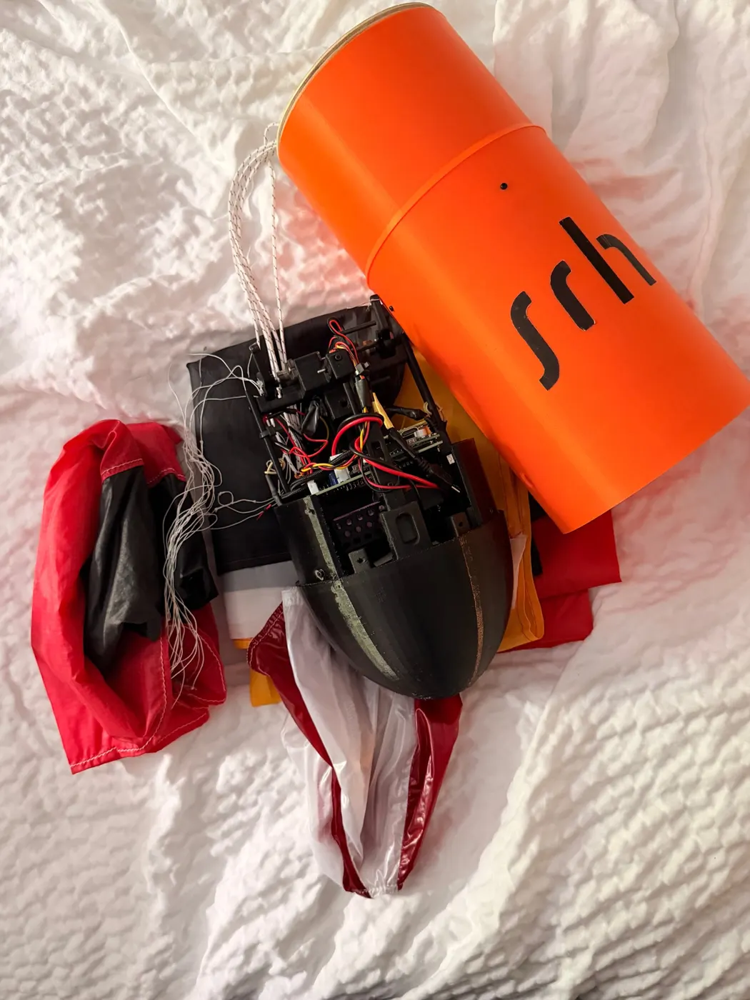
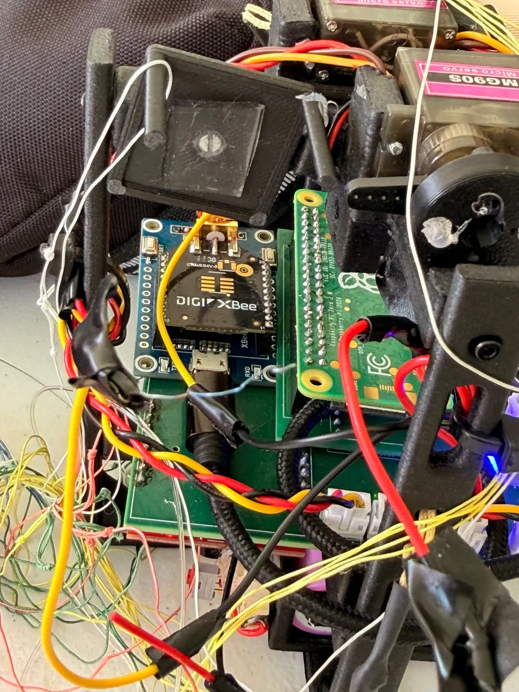
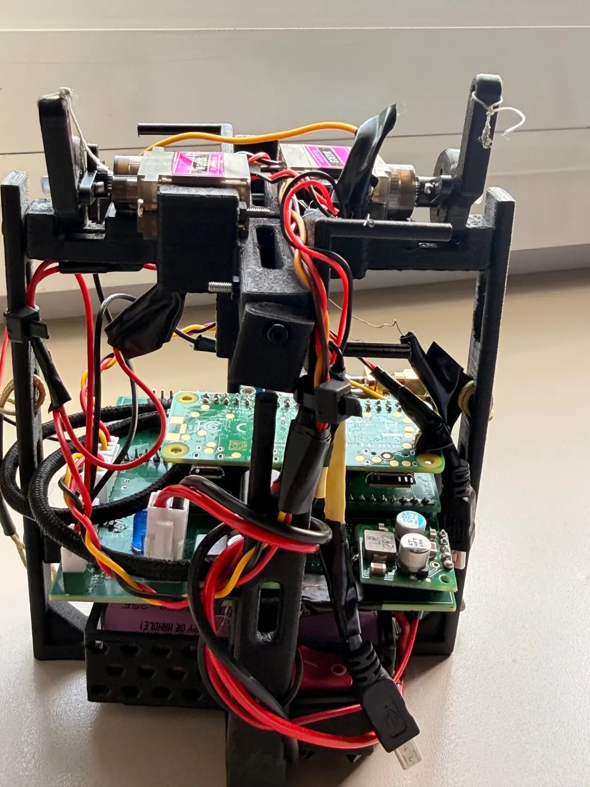
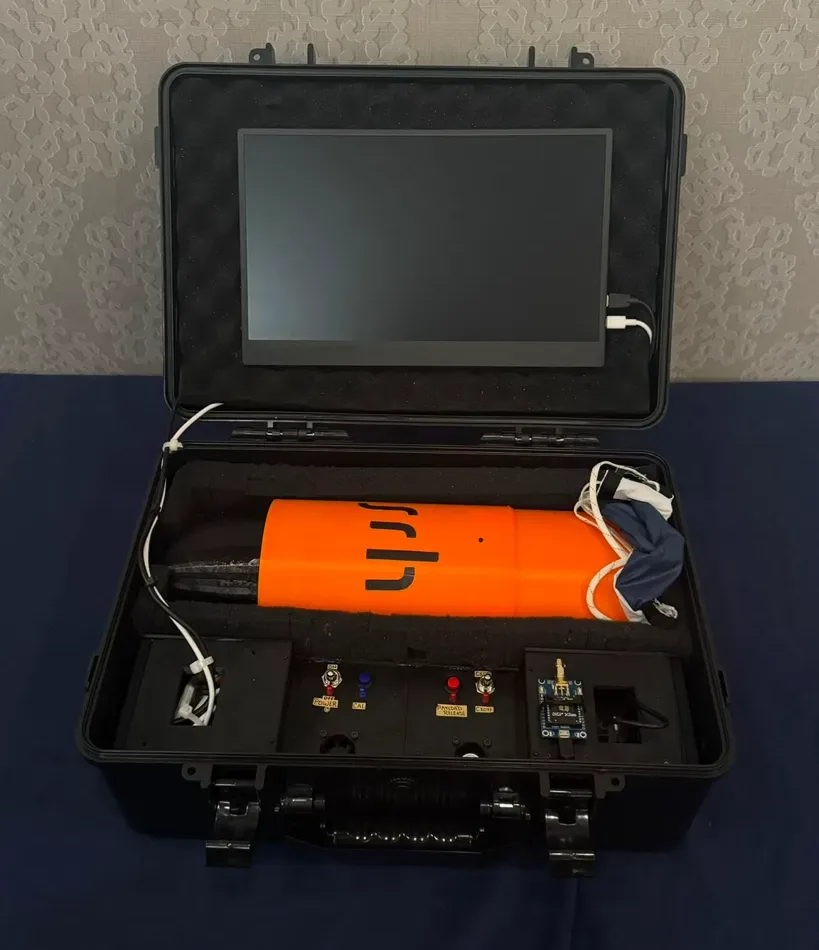
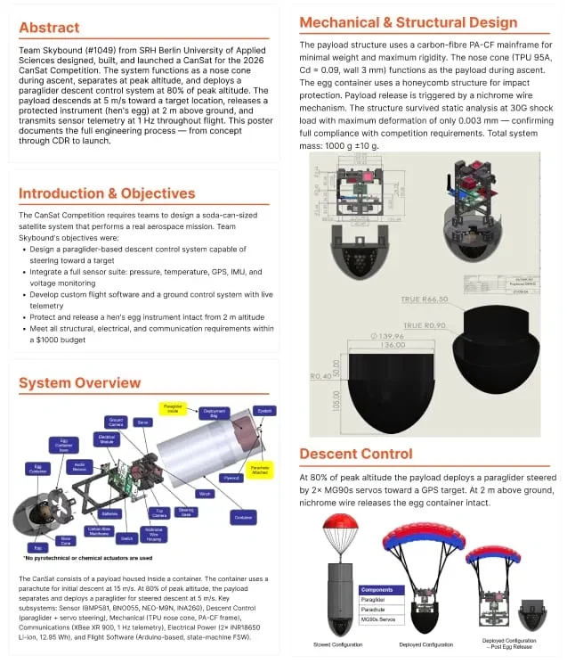
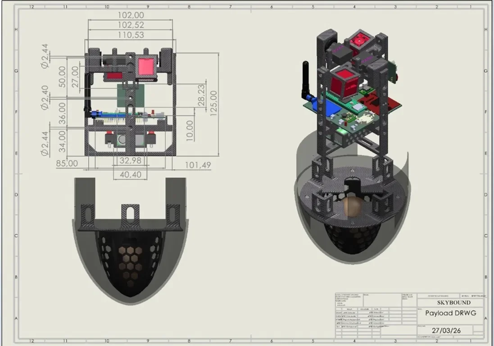